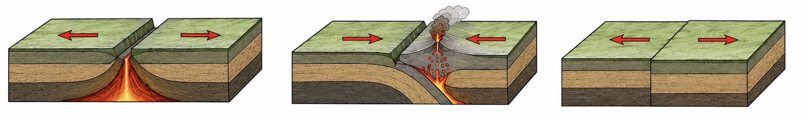

It is believed that most of the oil found was generated by the retention of organic matter for thousands of years in an oxygen-free environment, under high pressure and at temperatures between 65ºC and 160ºC. These conditions exist underground where temperature and pressure increase as we approach the center of the Earth. It is also necessary that the organic matter be retained in rock that has empty spaces (porosity) inside to allow its accumulation, generation, and flow of oil. Generation and accumulation follow a sequence defined by the geological history of the locality. Geologists work to understand this evolution and define locations conducive to oil accumulation.
The Earth is composed of a thin outer layer of 100 km called the Earth's crust and 6400 km of a large amount of fluid matter in its center at very high temperatures where the magma is located. The Earth's crust is composed of several layers of magmatic rocks, known as tectonic plates, resulting from the cooling of magma.

The tensions generated by the internal fluid mass are manifested through the movement of tectonic plates (creating mountains, causing cracks in the crust, etc.) and volcanoes.
It is believed that approximately 200 million years ago, all the continents were united in a large continental area called Pangea (Figure 2), and over all this time, these masses separated due to movements of the Earth's crust, forming the continents we know today. The intensity of these movements was strong enough to create mountains like the Himalayas or even transform oceans into lakes.
In the study of the different phases of these transformations, geological ages were defined, as shown in the table below.
| Geological Ages | |||
|---|---|---|---|
| ERA | PERIOD | EPOCH | DATES (million years) |
| Cenozoic | Quaternary | Recent | 0,01 |
| Pleistocene | 1,60 | ||
| Tertiary | Pliocene | 5,30 | |
| Miocene | 23,70 | ||
| Oligocene | 36,60 | ||
| Eocene | 57,80 | ||
| Paleocene | 66,40 | ||
| Mesozoic | Cretaceous | 144 ± 5 | |
| Jurassic | 208 ± 18 | ||
| Triassic | 245 ± 20 | ||
| Paleozoic | Permian | 286 ± 12 | |
| Carboniferous | Pennsylvanian | 320 | |
| Mississippian | 360 ± 10 | ||
| Devonian | 408 ± 12 | ||
| Silurian | 438 ± 12 | ||
| Ordovician | 505 ± 32 | ||
| Cambrian | 570 ± 40 | ||
| Pre-Cambrian | Proterozoic | Upper | 900 ± 40 |
| Middle | 1,600 ± 40 | ||
| Lower | 2,500 ± 40 | ||
| Archean | |||
The presence of water in the Earth's crust and the regime of rains and waves caused erosion of the magmatic rocks present in the mountains. Through rivers, these sediments were carried and deposited on the ocean floor in various layers. Along with these sediments, organic matter accumulated, the remains of various living organisms 1. Turbid currents, loaded with debris and organic matter, known as turbiditic currents, could generate mass accumulation (turbidites) in regions close to the river's encounter with the ocean. In this context, deltas, formed in the transition between a river and a body of water (lake, sea, or ocean), are of special importance in the study of these phenomena. When these accumulations are in regions close to slopes, material spilling (after an earthquake, for example) may occur. With the repetition of this phenomenon, several layers are formed.
Oceans also generate sediments on their own. In hotter regions, the precipitation of various chemical substances, mainly calcium and magnesium carbonate, can occur. Shells of various types of living organisms and corals are also an important source of carbonate sediments generated in the oceans.
Over millions of years and due to the movements of tectonic plates, entire oceans have been transformed into lakes that evaporated, leaving only the various layers of sediments. Some of these areas were slowly buried by the plates, causing an increase in temperature and pressure. The layers of sediments consolidated into sedimentary rocks. At very high temperatures and pressures, the process of fusion of some pre-existing rocks began, generating metamorphic rocks.
Consequently, the Earth's underground, or subsurface to be technically more correct, began to be composed of various layers of rocks, sedimentary or not. Tectonic movements caused deformations in these structures, such as folds, faults (fractures), and unconformities, as shown in Figure 3.

While the sediments became more compact, consolidating into sedimentary rocks, the organic matter was transformed into oil. Layers of sand sediments transformed into sandstones. Clastic rocks are those composed mainly of silica (e.g., quartz), with other common minerals, such as feldspar, amphiboles, and clay minerals.
Limestone rocks - or carbonates as they are known - were formed from shells, corals, and the chemical deposition of calcium or magnesium carbonate. Limestone is a carbonate rock with at least 50% calcite \((\text{CaCO}_3)\) in its composition, while dolomites are rocks where the mineral \(\text{CaMg(CO}_{3})_{2}\) known as dolomite predominates.
Shales and argillites were formed from clay, differing in physical appearance since shales are layered, while argillites have a more massive appearance. Salt layers transformed into rocks known as halites.
Metamorphic rocks result from the consolidation of pre-existing rocks subjected to high temperatures and pressures. Marbles are examples of metamorphic rock.
One of the most important characteristics of sedimentary rocks is their formation in layers, called stratification. Each of these layers has specific characteristics that reflect the prevailing conditions at the time these rocks were deposited. Due to the importance of this theme, sedimentology was created, a branch of geology dedicated to the study of sedimentary rocks.
Depending on the conditions imposed - pressure, temperature, type of organic matter, and time - in the process of consolidating sedimentary rocks, different types of hydrocarbons were generated. These processes are classified as follows:
Diagenesis. Studies indicate that at temperatures up to 65 \(\mathrm{{}^\circ}\)C, there is a predominance of bacterial activity that transforms organic matter into kerogen2, methane gas, and water. At the beginning of the process, kerogen molecules are large and complex, forming very viscous hydrocarbons such as paraffin, tar, and heavy oil. As the temperature increases, these molecules break down, forming lighter, less viscous products that make up gasoline, kerosene, and diesel oil.
Catagenesis. At temperatures between 65 \(\mathrm{{}^\circ}\)C and 165 \(\mathrm{{}^\circ}\)C, the breakdown of kerogen molecules occurs, generating liquid and gaseous hydrocarbons.
Metagenesis. At temperatures between 165 \(\mathrm{{}^\circ}\)C and 210\(\mathrm{{}^\circ}\)C, the breakdown of liquid hydrocarbons and their transformation into gas occurs.
Metamorphism. Above 210 \(\mathrm{{}^\circ}\)C, the degradation of hydrocarbons into CO2, carbon (or graphite), and methane gas occurs. In this process, the fusion of some components of the rock begins. Schist is a type of metamorphic rock with oil retained in it.
Over millions of years, oil-generating rock formations underwent one or more of the mentioned consolidation processes. Therefore, depending on the geological process (depth reached, type of sediment, type and amount of organic matter, etc.) traversed by the layers of sedimentary rocks, different types of oil accumulations are found. Gas fields, for example, can be the result of bacterial action (biogenic) near the surface or the result of very high temperatures (thermochemical) in very deep reservoirs.
By simplifying, we can associate the type of hydrocarbon formed with depth, as shown in Figure 4

The above rule should be observed with caution. In the Brazilian Pre-Salt, for example, as salt is a good conductor of heat, there are reservoirs that have temperatures (around 60º C) much lower than expected if we consider their depth, due to thermal exchanges with seawater.
The type of accumulated organic matter impacts the type of oil generated. In general terms, the molecular composition results from the composition of the accumulated organic matter. Organic matter is mainly composed of carbon, hydrogen, oxygen, nitrogen, and sulfur. With their variants, oils have the following elemental composition:
The presence of contaminant substances is of great importance in the exploration of oil fields, especially \(\text{H}_2{S}\) due to its toxicity. There are basically 3 different ways for \(\text{H}_2{S}\) generation in reservoirs:
Thermochemical sulfate reduction. This reaction occurs at temperatures in the range of 100-140 \(\mathrm{{}^\circ}\)C;
Table 2: Percentage of elements Element Percentage Hydrogen 11-14 Carbon 83 - 87 Sulfur 0,06 - 8 Nitrogen 0,02 - 1,7 Oxygen 0,08 - 2 Metals Up to 0,3% Bacterial reduction. This process is limited to temperatures below 80º C because, at very high temperatures, sulfate-reducing bacteria do not survive. Very saline reservoirs also inhibit bacterial growth;
Thermal maturation of kerogen. This is a process concomitant with generation.
Whether through pores or fractures in sedimentary formations, the generated oil tends to move from the generating rock underground to the Earth's surface, in a natural fluid movement towards lower pressure locations. It is likely that a lot of oil has migrated this way and degraded as a result of its contact with the environment (oxidation andbbacterial action), which is why large oil lakes are not found, but it is common to see oil seepage.
Therefore, for there to be an oil reservoir, it is necessary for the generated hydrocarbons to have their path towards the Earth's surface interrupted, that is, they are trapped in a geological trap. This trapping occurs in a reservoir rock (permeable like sedimentary rocks) surrounded by sealing rock (impermeable like magmatic rocks), as shown in Figure 5.

It is common to find reservoirs with alternating producing and non-producing zones (layers). The height of a producing zone is commonly called net pay.
Among the wide variety of rock properties that are of interest in the study of oil reservoirs, porosity, permeability, and wettability stand out. Permeability and wettability are affected by the attractive forces between the fluids and the reservoir rock. In small pores, the attractive forces are significant, making it difficult to displace oil. The concepts of surface tension and capillary pressure are the basis for understanding these phenomena.
Porosity. Matrix is defined as the solid part of the rock and pores as the empty space filled with fluids, whether oil, water, or gas. Porosity is a characteristic of sedimentary rocks that results from how the deposition of debris, the accumulation of shells, or the chemical precipitation of dissolved salts in river, lake, and sea waters occurred.
The reservoir rock has a porous volume V\({}_{P}\) which corresponds to the sum of the volumes V\({}_{o}\) (oil), V\({}_{G}\) (gas), and V\({}_{W}\) (water). The porous volume is the difference between the total volume and the volume of solids V\({}_{P}\) = (V\({}_{T}\) - V\({}_{solids}\)). The porosity Ф is determined experimentally from reservoir rock samples.
\begin{equation}\Phi = \frac{V_T - V_{\text{solids}}}{V_T} \label{eq:1.1}\end{equation}
Saturation. In the oil migration process, it competes with water to saturate the rock. Some rocks have an affinity for oil, others for water. Oil saturation is defined as the fraction of the porous volume occupied by oil, that is, S\({}_{o}\) = V\({}_{o}\)/V\({}_{P.}\) The sum of the saturations equals 1.
\[\begin{equation*} S_O + S_G + S_W = 1 \end{equation*}\]
A rock with high oil saturation is indicative of the presence of large volumes of oil. This volume will also depend on the porous volume. Known V\({}_{T}\), \(\emptyset\) and S\({}_{o}\), it is possible to determine the volume (N) of hydrocarbons in the reservoir.
Example Consider an oil reservoir whose pressure is above the oil bubble pressure, that is, there is no gas present under reservoir conditions. If the reservoir is cylindrical in shape with an area A = 3.2x10\({}^{6\ }\)m\({}^{2}\), height h = 10 m, average porosity = 15%, and connate water saturation = 30%, determine the volume of hydrocarbons contained in the formation.
Solution. \( \text{Volume} = V_T\,\phi\,S_o = 3{,}2\times 10^{6}\cdot 10\cdot 0{,}15\cdot(1-0{,}3) = 3{,}36\times 10^{6}\ \text{m}^3 \)
Permeability. For oil to be extracted, it must have mobility, flowing through the porous rock towards the production wells, as shown in Figure 6. Important aspects in this matter are the affinity of the oil for the rock, the porosity, the shape of the grains, and the oil's viscosity. The permeability of the rock is a measure of a rock's ability to allow the flow of fluids through it. When it comes to the flow of a single fluid, the permeability is called absolute.
Permeability is measured in darcys due to the work of the French Water Department engineer Henri Darcy. One darcy is by definition the permeability of a rock in which a pressure gradient of 1 atm promotes the flow of 1 cm \({}^{3}\)/s of a fluid with a viscosity of 1 centipoise through 1 cm\({}^{2}\) of area open to flow. It is common to use millidarcy (mD) to represent permeability.
In Figure 7, we see a representation of the horizontal flow of an incompressible fluid in a porous medium.
The fluid has viscosity µ, the porous medium has length L, A represents the area in the direction of flow, and p\({}_{1}\) - p\({}_{2}\) corresponds to the pressure loss in the porous medium. Darcy proposed the following equation:
\[\begin{equation} q = \frac{A k}{\mu} \frac{p_1 - p_2}{L} \label{eq:1.2}\end{equation}\]
with the following units:
q = volumetric flow through the porous medium (cm\({}^{3}\)/s)
k = permeability (cm\({}^{2}\))
A = area in the direction of flow (cm\({}^{2}\))
µ = viscosity (centipoise= 10\({}^{-2}\) poise= centigram/cm\(\mathrm{\cdot}\)s)
L = length of the porous medium (cm)
p\({}_{1}\) - p\({}_{2}\) = corresponds to the pressure difference associated with energy losses in the porous medium (atm)

The units chosen by Darcy have no correspondence in the usual unit systems (SI, CGS, etc.). As 1 poise has units \(\text{ g/cm}\mathrm{\cdot} \text{s}\), one centipoise corresponds to \({10}^{-2} \text{ g/cm}\mathrm{\cdot} \text{s}\) and the resulting permeability unit is \({10}^{-2} \text{ g}\mathrm{\cdot} \text{cm/atm} \mathrm{\cdot} {s}^{2}\) . The term k/µ is known as transmissibility or mobility and better expresses the productive potential of a formation than just permeability, as it incorporates the viscosity of the oil.
From Darcy's equation ( equation\eqref{eq:1.2}), we can deduce an expression for speed:
\[\begin{equation} u = \frac{q}{A} = \frac{k}{\mu} \frac{p_1 - p_2}{L} \label{eq:1.3} \end{equation}\]
Where u is called apparent speed. To determine the actual speed, which occurs between the pores of the rock, we would have to subtract from area A the area occupied by the rock matrix. Note that as it is horizontal flow, the height difference was not considered in the equation.
The most general case, which often better represents reservoir conditions, is the one where there is a pressure difference between p1 and p2 and there is also a height difference between these points. This representation can be seen in Figure 8.
In this case, the flow becomes:
\[\begin{equation} q = \frac{k \, A \, \gamma}{\mu \, L} \left( \frac{p_1 - p_2}{\gamma} + (z_1 - z_2) \right) \label{eq:1.4} \end{equation}\]
Where
z = elevation
\(\gamma\) = specific weight
Where \(\gamma\) = \(\rho\) g/1,0133 for conversion to force unit. Some authors prefer to define \({}_{\Phi =\, \, \left(\, (p_{2} -p_{1} )+\gamma (z_{2} -z_{1} )\right)}\) as the flow potential between the two points. We can then rewrite the above equation in its differential form as follows:
\[\begin{equation} q = -\frac{k \, A \, \rho \, g}{\mu} \frac{d\Phi}{d\ell} \label{eq:1.5} \end{equation}\]


where \(\ell\) corresponds to the path traveled by the fluid. The negative sign arises from the fact that the derivative \({}_{\frac{d\Phi }{d\ell } }\) is negative in the direction of fluid flow.
Because clay has very small grains, its rocks - shales or argillites - can have very low permeability, sometimes being considered impermeable. Therefore, they can also be sealing rocks. The same applies to halites (resulting from the concentration of salts).
Sandstones usually have higher permeability. As in all cases of sedimentary rocks, their permeability will vary according to the degree of compaction they have undergone.
Some rocks have microfractures that significantly alter their permeability. This is the case with carbonates, where when measuring the matrix permeability, low values are found, but if micro-fractures are considered, the permeability is very high.
Oil permeability will depend on its saturation in the rock. If the rock is saturated with oil and water injection is initiated, it will displace the oil until the irreducible saturation of the oil is reached. Because of this, relative permeability is defined where the permeability of one phase is divided by absolute permeability. Relative permeability will vary with saturation, as we can see in Figure 9.
Relative permeability to oil k\({}_{ro}\) = k\({}_{o}\)/k
Relative permeability to water k\({}_{rw}\) = k\({}_{w}\)/k
Relative permeability to gas k\({}_{rg}\) = k\({}_{g}\)/k

Capillary Pressure and Surface Tension. When two different fluids are in contact (Figure 10), the difference in attractive forces at the interface generates surface tension.

Particles on the surface have more energy because they are not balanced by other molecules of the same phase. Interfacial tension is the resultant force that tends to pull interface molecules back into the phase. When it comes to two liquids, surface tension is commonly called interfacial tension.
Capillary pressure between two immiscible fluids can be interpreted as the pressure to be exerted on a non-wetting fluid to penetrate a capillary (pore), displacing a wetting fluid that initially occupied the capillary, and can be calculated by Laplace's equation for circular geometry.
\[\begin{equation} p_c = \frac{2\sigma |\cos \theta|}{r_c} \label{eq:1.6} \end{equation}\]
where \({p}_{c}\) is the capillary pressure (N/m²), \( \sigma \) is the interfacial tension between fluids (N/m), r\({}_{c}\) is the capillary radius (m), and \(\theta\) (rad) is the contact angle between the non-wetting fluid and the solid.
Later, in the chapter on Reservoirs, we will discuss the importance of capillary pressure in oil displacement in the reservoir rock.
Wettability. It is a measure of a fluid's tendency to adhere to a solid surface (Figure 11). The degree of wettability can be determined from the angle that the liquid forms on this surface, called the contact angle.
The contact angle (\(\theta\)) is the angle formed by the drop of the denser liquid on a surface,nas shown in the figure above. This angle can vary between \(0^{\circ}\) and \(180^{\circ}\).
In the case of an oil reservoir (Figure 12), the solid surface is the rock, and the immiscible fluids are water, oil, and possibly gas. We will discuss here the wettability relationship between water, oil, and rock, where the denser fluid is water.

The phase that preferentially wets the solid surface is called the wetting phase. When \(\theta\) is less than \(90^{\circ}\), it indicates that the wetting liquid in the rock is water. When \(\theta\) is greater than \(90^{\circ}\), it indicates that the wetting liquid in the rock is oil. These two cases portray what is called fractional wettability. For \(\theta\) = \(90^{\circ}\), it is said to be mixed wettability, both fluids wet the rock. In extreme cases, we have \(0^{\circ}\), the water perfectly wets the solid, and \(180^{\circ}\) , the water does not wet the solid at all.
In Figure 13, we see the curvatures found in capillaries of water-wettable and oil-wettable rocks.
The contact angle allows calculating the adhesion tension of water on the solid surface in the presence of oil. It is the angle formed by the resultant interaction of molecular forces at the water-oil and water-rock surface interfaces, as shown in Figure 14.
The adhesion tension (\({\sigma}_{A}\)) can be calculated as:
\(\sigma_{A} = \sigma_{OS} - \sigma_{WS} = \sigma_{WO}\cos\theta\)

where:
\(\sigma_{A}\) is the adhesion tension of water on the rock surface in the presence of oil
\(\sigma_{OS}\) is the surface tension of the oil-rock surface interface
\(\sigma_{WS}\) is the surface tension of the water-rock surface interface
\(\sigma_{WO}\) is the surface tension of the oil-water interface
When \(\sigma_{OS} > \sigma_{WS}\), \(\sigma_{A} > 0\) and the solid surface is preferentially wetted by water. This happens when \(\theta < 90^{\circ}\).
When \(\sigma_{OS} < \sigma_{WS}\), \(\sigma_{A} < 0\) and the solid surface is preferentially wetted by oil. This happens when \(\theta > 90^{\circ}\).
When \(\sigma_{A} = 0\), this indicates that both water and oil have the same affinity for the rock. This happens when \(\theta = 90^{\circ}\).
Interfacial tension has a magnitude of force per unit length, which is equivalent to energy per unit area. In SI, its magnitude is newton per meter (N/m) or joule per square meter (J/m\({}^{2}\)). In the CGS system, its magnitude is defined in dyne per centimeter (dyne/cm) or erg per square centimeter (erg/cm\({}^{2}\)).
Wettability and adhesion tension vary according to the fluids and solids involved. In mixed wettability, water occupies the smaller pores of the rock, and oil occupies the larger pores.
Example. In a system containing water-oil-rock, the water drop is on a solid surface. The following tensions were measured: \(\sigma_{wo}\) = 40 dyne/cm; \(\sigma_{so}\) = 80 dyne/cm, and \(\sigma_{sw}\) = 60 dyne/cm. Determine:

Solution:
\(\sigma_{so}\) - \(\sigma_{sw}\) = \(\sigma_{wo}\) cos \(\theta_{wo}\)
80 - 60 = 40 \(\cos\theta_{wo}\)
\(\cos\theta_{wo} = 0.5\)
\(\theta_{wo} = 60^{\circ}\)
Since \(\theta_{wo} = 60^{\circ}\), water preferentially wets the rock
\(\sigma_{A}\) = \(\sigma_{so}\) - \(\sigma_{sw}\)
\(\sigma_{A}\) = 80 - 60 = 20 \(\text{dyne/cm}\)
EXERCISES
In exercises 1 to 10 below, indicate whether true or false:
Regarding the oil generation system, it can be stated that:

Determine which of the factors below affect the recovery factor of a reservoir.
A cylindrical sample of a core from an oil rock formation 4 cm long and 1 centimeter in diameter showed a water flow of 60 ml/min with an upstream pressure of 2.3 atm and a downstream pressure of 1.0 atm. If the water has viscosity = 1cp, determine the permeability of the sample. Answer k = 3.92 Darcy
Calculate the volume of oil, measured under standard conditions, existing in a reservoir whose pressure is above the oil bubble point, with the following characteristics:
Total reservoir volume \({10}^{9} {m}^{3}\)
Formation porosity 15%
Connate water saturation 30%
Oil formation volume factor 1.3
Answer: N = 8.1 x 10\({}^{7}\) m\({}^{3}\) std.
Thomas, J. E. (Editor); Fundamentals of Petroleum Engineering, Interciência Publisher, 2nd Edition, 2001
Harbaugh, J. W., Davis, J. C., Wenderbourg, J. Computing Risk For Oil Prospects: Principles And Programs. Pergamon Elsevier Science, 1995.